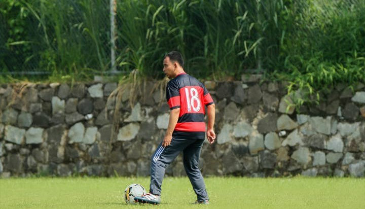
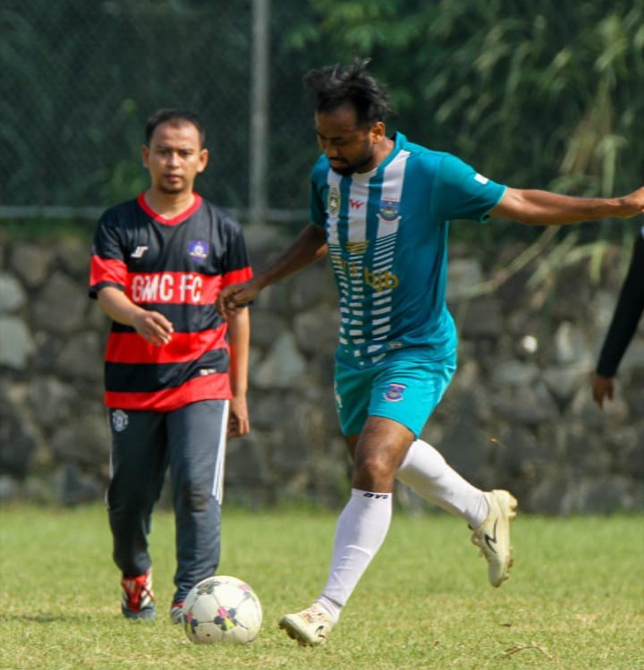
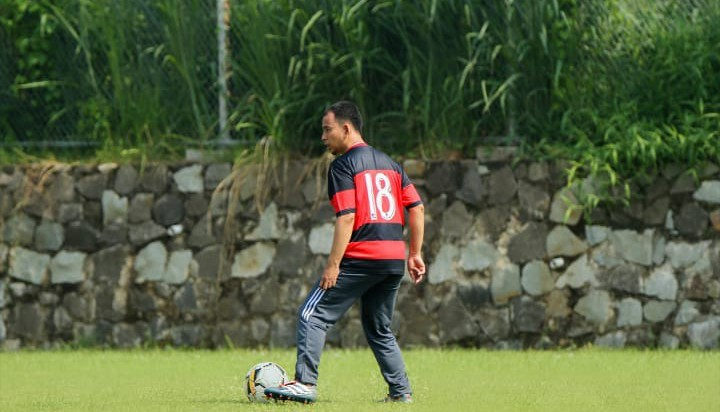
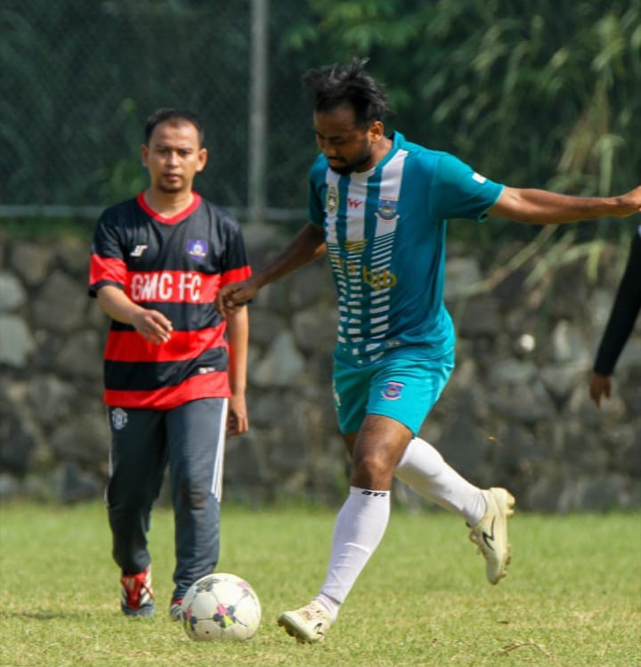
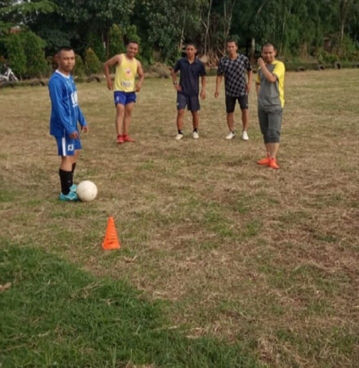
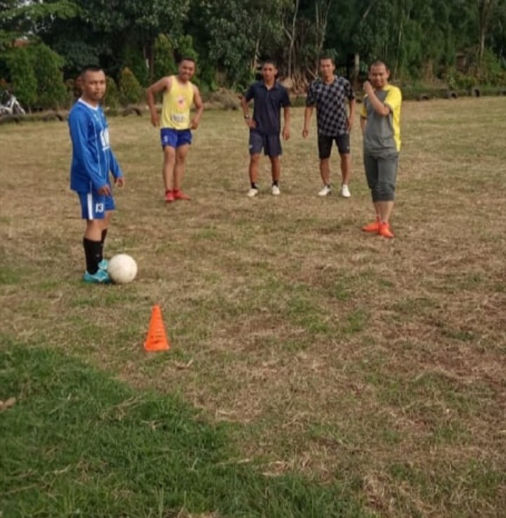

4 Manfaat Penting Bermain Sepak Bola untuk Pria dan Wanita
Bola.com, Jakarta - Sepak bola merupakan salah satu cabang olahraga yang paling banyak digemari dan kerap menarik perhatian banyak orang. Tak hanya menarik ditonton, bahkan banyak juga suka terlibat langsung untuk memainkan olahraga ini. Sepak bola tak hanya baik untuk kaum pria, tetapi juga bermanfaat juga bagi wanita. Hasil penelitian pada 2010 di Denmark membuktikan wanita yang bermain sepak bola selama 14 minggu kesehatan cardio-nya meningkat 15 persen. Faktanya, kompetisi untuk para wanita juga digelar di berbagai belahan dunia dan beragam level. Di Indonesia juga baru-baru ini berencana menggelar Liga 1 Putri.
Sepak bola memiliki sederet manfaat untuk kesehatan. Hampir semua kalangan menyukai sepak bola. Olahraga ini bisa dimainkan oleh segala usia, dari anak-anak hingga orang tua. Sepak bola merupakan olahraga yang dimainkan dua tim dengan masing-masing menurunkan sebelas pemain. Kesebelasan yang mampu mencetak gol lebih banyak, maka akan menjadi pemenang. Contohnya, bintang sepak bola dunia seperti Cristiano Ronaldo dan Lionel Messi. Mereka memiliki tubuh yang bugar berkat menekuni sepak bola dan disertai latihan rutin. Kehebatan keduanya saat mengolah si kulit bundar membuat mereka menjadi idola banyak orang, termasuk anak-anak. Berdasarkan penelitian University of Copenhagen, mereka membagi 27 pria antara usia 63 hingga 70 tahun ke dalam beberapa kelompok. Kelompok pertama berlatih sepak bola, kelompok kedua hanya melakukan latihan kekuatan dua kali seminggu selama satu jam, serta kelompok ketiga tetap tidak aktif untuk tujuan kontrol.
sumber materi https://www.bola.com/ragam/read/4077860/4-manfaat-penting-bermain-sepak-bola-untuk-pria-dan-wanita
Hasilnya menunjukkan pemain sepak bola membuat peningkatan 30 persen dalam fungsi otot, dan kapasitas asupan oksigen meningkat 15 persen. Terlebih, mereka juga mendapatkan perbaikan dalam mineralisasi tulang, hal ini menekankan pentingnya kesehatan tulang pada orang tua. Berikut manfaat bermain sepak bola untuk segala usia..
Para bintang lapangan hijau akan bergerak ke depan dan ke belakang lapangan saat pertandingan. Mereka berjalan, jogging dan berlari dengan penuh selama 90 menit. Hal itu tentunya akan membantu para pesepak bola mengendalikan detak jantung, dan melakukan latihan kardiovaskular. Latihan cardio bertujuan membantu pemain menjaga kesehatan jantungnya, menghindari plak yang ada di arteri, mengurangi tekanan darah, hingga membakar kalori. Tak hanya pemain, bahkan kiper juga melakukan latihan cardio dengan bergerak di area gawang..


 



 
